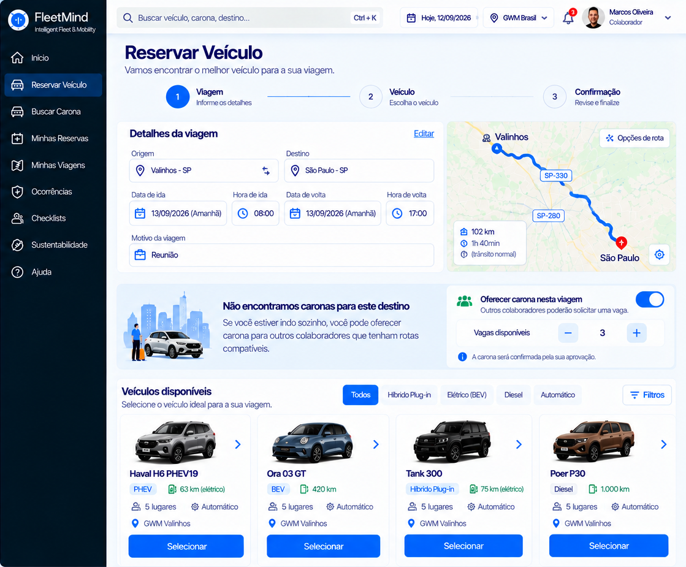

Hoje esta tela se chama "Solicitar Viagem" (/trips/new). Na arte vira "Reservar Veículo", em passos numerados, com o menu azul-marinho. Nada foi alterado ainda.
Par 1 — reserva quando NÃO há carona na rota
SAI: Solicitar Viagem + veículo recomendado + "Deseja disponibilizar vagas?"/trips/new (hoje)

→
ENTRA: Reservar Veículo, desktop, sem caronasSCR-USR-002, imagem 04

Diferença importante: a arte mostra o aviso "Não encontramos caronas para este destino". Você decidiu que, sem carona, a carona nem aparece. Eu NÃO mostraria esse aviso. Fica o passo "Oferecer carona nesta viagem" (liga/desliga e vagas), que já existe hoje.
O que a arte tem e eu NÃO faria (não há dado real ou funcionalidade)
• Mapa da rota com km e tempo (precisaria da API de rotas na reserva e custa chamada). • Foto e nota do motorista e "Match %". • Estrelas. • Passos numerados com barra (Viagem, Veículo, Carona, Confirmação): a reserva hoje é uma página só; eu faria o cabeçalho de passos apenas visual se você quiser. • Abas "Por período / Por destino / Uso recorrente" e "Uso recente". • Botão "usar minha localização". • Filtros de veículo por tipo e a lista de 6 veículos: só se houver dados reais de cada veículo (modelo, tipo, lugares, autonomia). Hoje o sistema recomenda 1 veículo e mostra "outro veículo elegível".